- 玩 法 說 明 -
在 30 秒內，玩家需快速蒐集各種不同熱量食材，火鍋料將會再隨機加到湯底中
贏得更多熱量讓自己成為「 最佳大胃王 」！
享受火鍋美味的同時，別忘了留意倒數計時，等你來挑戰！！
目前最高熱量紀錄：
0
大卡
熱 量 表
品項
豬肉片
牛肉片
高麗菜
青江菜
玉米塊
白蘿蔔
番茄
蝦子
魷魚圈
油豆腐
竹輪
香菇
皮蛋
福袋
食材
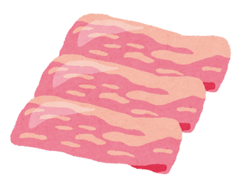
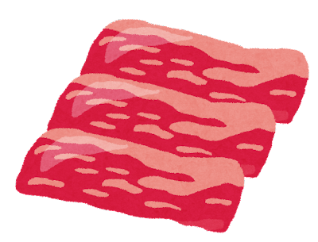
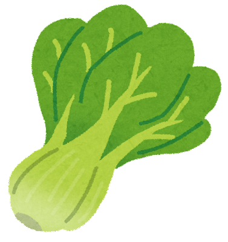
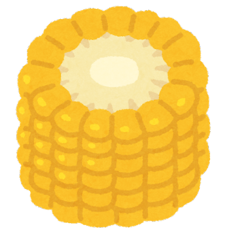
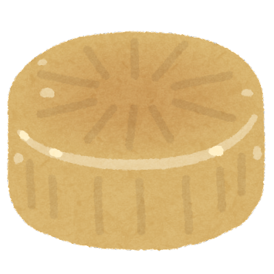
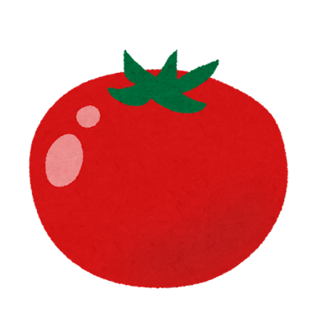
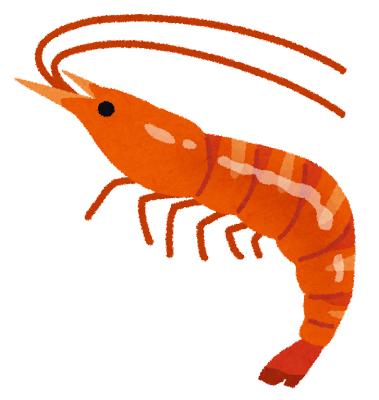
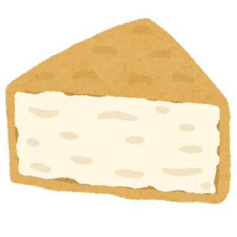
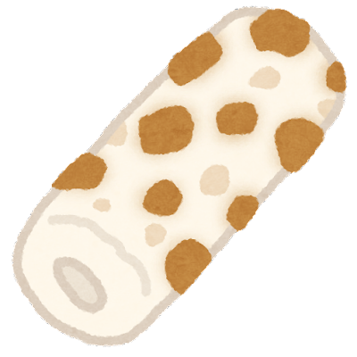
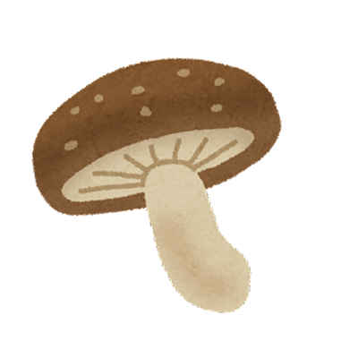
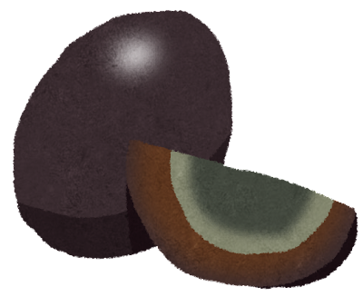
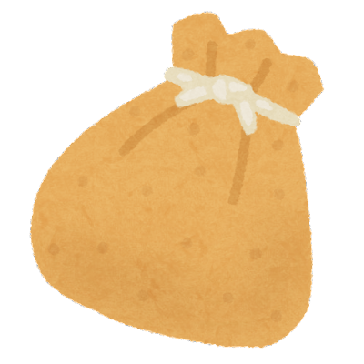
熱量
180
120
23
10
40
8
18
20
10
110
50
3
120
88
開始撈！
準備好了嗎？
熱量：
0
大卡
剩餘：
0
秒
品項
熱量
品項
熱量
180
120
23
10
40
8
20
10
110
50
3
120
88
18